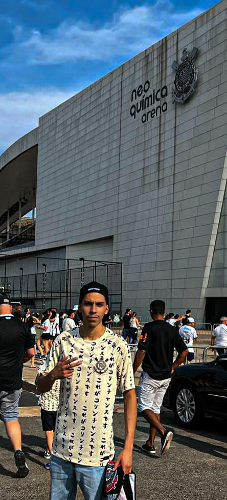

Sobre nós

<---- Paris Salazar: Tenho 19 anos, tenho uma paixão enorme pelo Corinthians, desde pequeno quando
ia pros jogos com meu avô e meu pai. Eu sou corinthians até o meu último dia, nas vitorias e
principalmente nas derrotas. Minha primeira lembrança é estar na sala de casa e ver meu pai e
avô chorando de felicidade quando o timão subiu para a primeira divisão. Vibrei muito em 2012
com os titulos da liberta e o Mundial. Chorei em 2018 na final da copa do Brasil e passei muita
raiva em 2020 😅. Mas eu sou corinthiano maloqueiro e sofredor! Graças a Deus!
Filipe Giovannetti: Tenho 19 anos, moro na Vila Formosa. Comecei um curso
de JavaScrip recentemente, não tenho muita experiencia no assunto mas gosto muito de
programação/software, sou bem iniciante ainda. Tenho um inglês bem básico. Gosto de joga um
CS, Valorant.
Como tudo começou...
Era 1.° de setembrode 1910 e cinco operários - Joaquim Ambrósio, Carlosda Silva, Rafael Perrone,
Antônio Pereira e Anselmo Correia - se reuniram com mais oito rapazes e fundaram o "SportClub
Corinthians Paulista" após assistirem a uma partida de uma equipe
de futebol da Inglaterra. O presidente escolhido por eles foi o alfaiate Miguel Bataglia, que já
no primeiro momento afirmou: "o Corinthians vai ser o time do povo e o povo é quem vai fazer o
time".
De partida em partida o time foi se tornando famoso, mas era ainda um time de várzea. No ano de
1913, o Corinthians pleiteou uma vaga junto à Liga Paulista de Futebol e foi aceito, tornando-se,
assim, o quarto dos chamados "três mosqueteiros" (os outros eram Americano, Germânia e
Internacional), daí a origem do mascote corinthiano.
O Corinthians, um clube de futebol brasileiro, comemorou seu 100º aniversário em 2010. A Nike
decidiu dar aos mais de 30 milhões de torcedores do clube um presente à altura: um país, chamado
República Popular do Corinthians. Para garantir o reconhecimento da República Popular do
Corinthians como país, a F/Nazca Saatchi & Saatchi São Paulo desenvolveu tudo o que uma nação
tem: brasão, documentos, legislação, bandeira, moeda, heróis e embaixada.